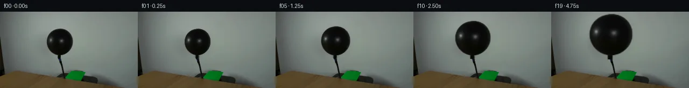

![首帧]()

Round 00
2026-11-04T22:02:43.707289+00:00像素候选变化代码 +186/−0inspection 更新
pixels 90e15018590617cf · code 8813e7592edff5ee
查看本轮 generate.py 真实 diff
--- previous/generate.py +++ current/generate.py @@ -0,0 +1,186 @@ +#!/usr/bin/env python3 +"""Generate a 20-frame, source-derived balloon inflation animation.""" + +from pathlib import Path +import cv2 +import numpy as np +from PIL import Image, ImageDraw + +from artifact_io import save + + +ROOT = Path(__file__).resolve().parent +W, H = 256, 144 + + +def smoothstep(x: float) -> float: + x = float(np.clip(x, 0.0, 1.0)) + return x * x * (3.0 - 2.0 * x) + + +def source_layers(source: np.ndarray): + """Return a clean plate and a tightly matted source balloon crop.""" + gray = cv2.cvtColor(source, cv2.COLOR_RGB2GRAY) + + # The connected very-dark component in this window is the rubber body. + candidate = np.zeros((H, W), np.uint8) + candidate[27:88, 80:142] = (gray[27:88, 80:142] < 88).astype(np.uint8) * 255 + n, labels, stats, _ = cv2.connectedComponentsWithStats(candidate, 8) + center_label = labels[55, 111] + hard = (labels == center_label).astype(np.uint8) * 255 + hard = cv2.morphologyEx(hard, cv2.MORPH_CLOSE, np.ones((3, 3), np.uint8)) + + # Include antialiased edge coverage but not the broad wall shadow. + alpha = cv2.GaussianBlur(hard.astype(np.float32) / 255.0, (0, 0), 0.62) + alpha[gray > 112] *= np.clip((128.0 - gray[gray > 112]) / 16.0, 0.0, 1.0) + alpha = np.clip(alpha, 0.0, 1.0) + + # Inpaint just beyond the body. The wall is low-frequency, so Telea gives a + # stable clean plate while retaining the original photographic falloff. + erase = cv2.dilate((alpha > 0.025).astype(np.uint8) * 255, + cv2.getStructuringElement(cv2.MORPH_ELLIPSE, (9, 9))) + erase[87:, :] = 0 # retain all of the exposed real hose and tabletop setup + clean = cv2.inpaint(cv2.cvtColor(source, cv2.COLOR_RGB2BGR), erase, 5, + cv2.INPAINT_TELEA) + clean = cv2.cvtColor(clean, cv2.COLOR_BGR2RGB) + + # A small fixed crop contains the complete body and soft edge. + x0, y0, x1, y1 = 82, 28, 140, 87 + crop_rgb = source[y0:y1, x0:x1].astype(np.float32) + crop_a = alpha[y0:y1, x0:x1].astype(np.float32) + return clean, crop_rgb, crop_a, (x0, y0, x1, y1) + + +def composite(frame: np.ndarray, rgb: np.ndarray, alpha: np.ndarray, + x: int, y: int) -> None: + """Alpha-composite a possibly clipped RGB layer in-place.""" + h, w = alpha.shape + dx0, dy0 = max(0, x), max(0, y) + dx1, dy1 = min(W, x + w), min(H, y + h) + if dx0 >= dx1 or dy0 >= dy1: + return + sx0, sy0 = dx0 - x, dy0 - y + sx1, sy1 = sx0 + dx1 - dx0, sy0 + dy1 - dy0 + a = alpha[sy0:sy1, sx0:sx1, None] + dst = frame[dy0:dy1, dx0:dx1].astype(np.float32) + src = rgb[sy0:sy1, sx0:sx1].astype(np.float32) + frame[dy0:dy1, dx0:dx1] = np.clip(src * a + dst * (1.0 - a), 0, 255).astype(np.uint8) + + +def render_frame(source: np.ndarray, clean: np.ndarray, crop_rgb: np.ndarray, + crop_a: np.ndarray, bounds, index: int) -> np.ndarray: + if index == 0: + return source.copy() + + u = index / 19.0 + growth = smoothstep(u) + + # The source crop is 58x59. Horizontal expansion is a little stronger, + # making the pressurized balloon fuller rather than simply zoomed. + scale_x = 1.0 + 0.66 * growth + scale_y = 1.0 + 0.56 * growth + sway = 0.9 * np.sin(2.0 * np.pi * u) * np.sin(np.pi * u) + + sh, sw = crop_a.shape + nw = max(1, int(round(sw * scale_x))) + nh = max(1, int(round(sh * scale_y))) + resized_rgb = cv2.resize(crop_rgb, (nw, nh), interpolation=cv2.INTER_CUBIC) … diff truncated; 99 more lines …